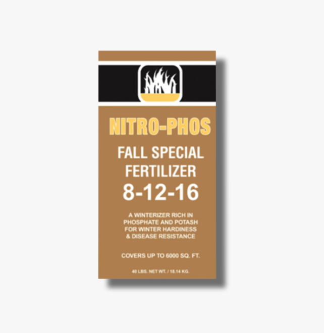

Texas lawns.
Texas know-how.
From the first spring green to the last fall feeding. Give your lawn the home-field advantage.
better Texas lawns.
A stronger spring
starts this fall.
Help your lawn recover from summer and prepare for cooler weather with Fall Special 8-12-16.
See your seasonal plan
Fall Special
Root support. Winter readiness.
What does your lawn need?
A little guidance.
A whole lot of growing potential.
Good lawns start here.
Choose products for your grass type and lawn conditions. Always follow the product label.
Your Texas lawn.
All year long.
A seasonal rhythm for Gulf Coast growing.
Select a month to see the next step.
Your next great lawn
starts close to home.
Find Nitro-Phos at independent garden centers and lawn-care retailers. Search nearby stores, then call to confirm the product you need.
Opens a Google Maps search. Store participation and inventory must be confirmed.
Texas roots run deep.
Since 1985, Nitro-Phos has supplied the Texas Gulf Coast with fertilizers, plant nutrition and pest-control products for home gardens and professional landscapes.
We work with retailers and large-scale landscapers to bring the right products closer to the people who use them. Because growing here takes knowing here.
Your business.
Our growing expertise.
Retailer support, wholesale inquiries and products for professional landscapes. Let’s find what works for your business.
Get to know your lawn.
What do the three numbers on a fertilizer bag mean?
They show the percentages of nitrogen, phosphorus and potassium. Nitrogen supports leafy growth, phosphorus supports roots, and potassium contributes to plant health and stress tolerance. Choose your formula around your lawn’s needs and soil test results.
How do I choose a spreader setting?
Use the setting listed for your exact spreader and product. Settings are starting points; calibrate your spreader and follow the label’s application rate. View Nitro-Phos spreader settings.
When should I feed my lawn?
The published Nitro-Phos program includes February, March, June, August and October feedings. Local weather, active grass growth, your turf species and soil conditions affect timing. Use the seasonal guide above and follow your product label.
Can I buy directly through this website?
Products are available through retailers. Use the local store search or call (713) 228-1868 for help finding a dealer. Retailers and commercial buyers can contact the sales team about wholesale availability.